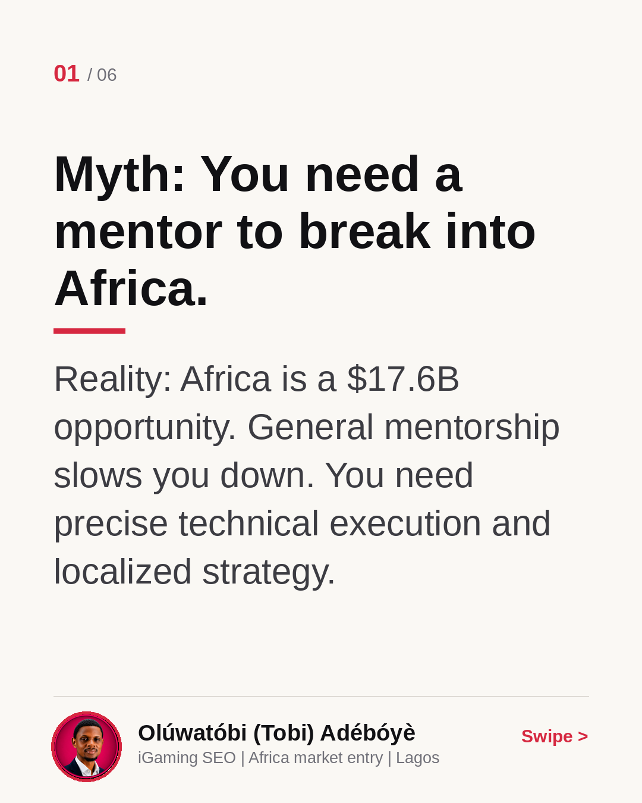
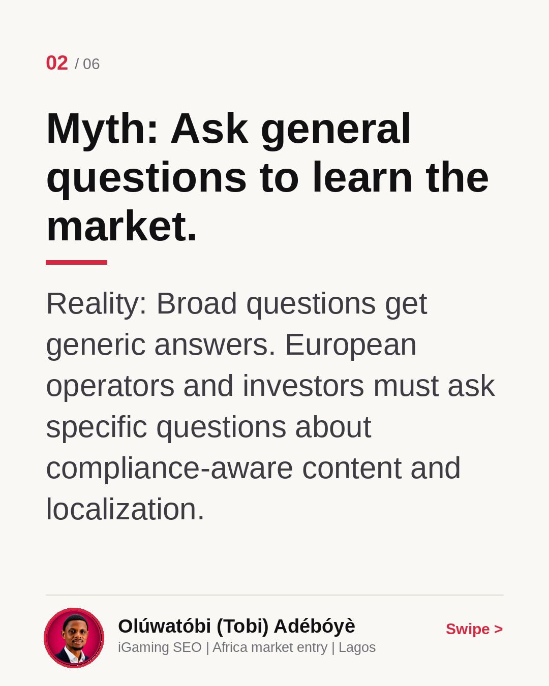
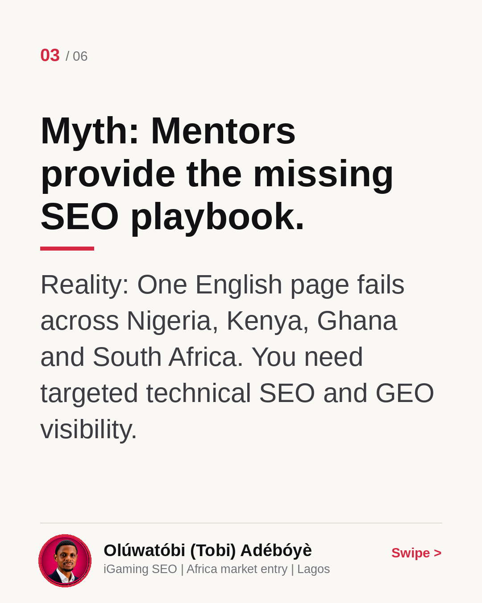
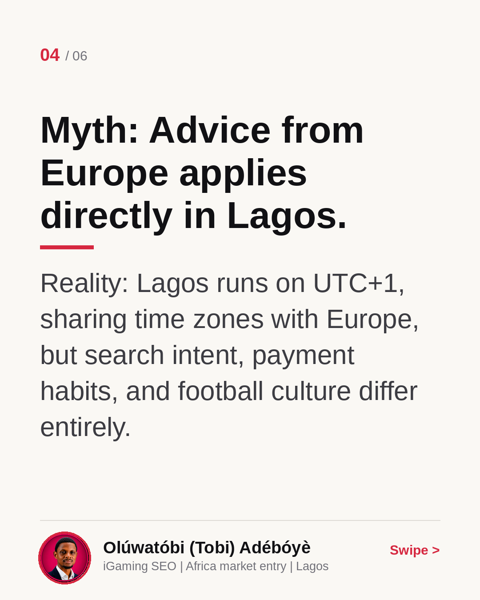
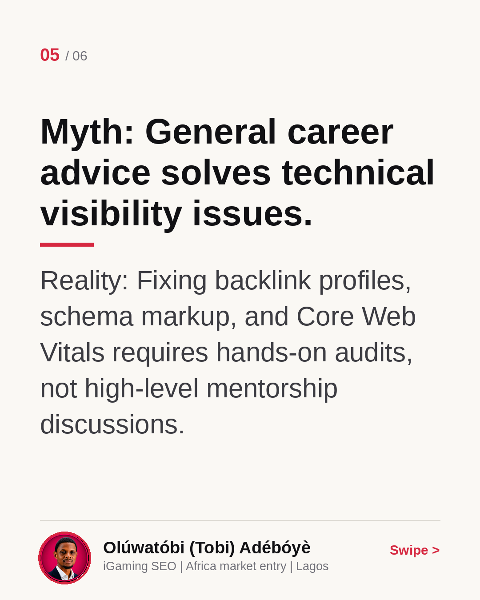
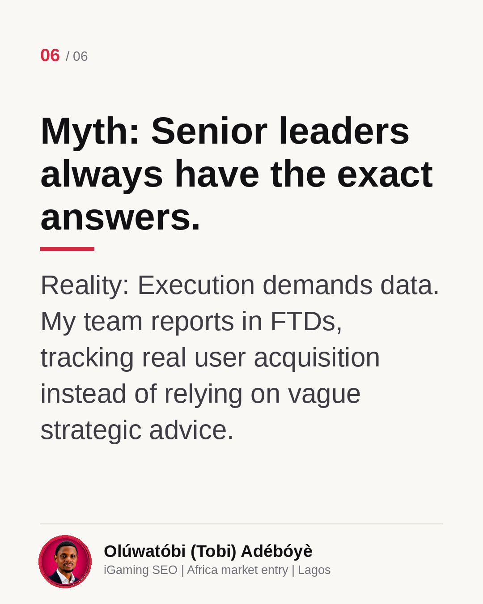

Stop Asking For Mentors In iGaming SEO
European operators and investors eyeing the $17.6B African market often waste time looking for general mentors. In this carousel, I break down why asking specific technical and localization questions gets you to revenue faster. Read through the slides and let me know your biggest challenge with market entry.
Myth: You need a mentor to break into Africa.
Reality: Africa is a $17.6B opportunity. General mentorship slows you down. You need precise technical execution and localized strategy.

Myth: Ask general questions to learn the market.
Reality: Broad questions get generic answers. European operators and investors must ask specific questions about compliance-aware content and localization.

Myth: Mentors provide the missing SEO playbook.
Reality: One English page fails across Nigeria, Kenya, Ghana and South Africa. You need targeted technical SEO and GEO visibility.

Myth: Advice from Europe applies directly in Lagos.
Reality: Lagos runs on UTC+1, sharing time zones with Europe, but search intent, payment habits, and football culture differ entirely.

Myth: General career advice solves technical visibility issues.
Reality: Fixing backlink profiles, schema markup, and Core Web Vitals requires hands-on audits, not high-level mentorship discussions.

Myth: Senior leaders always have the exact answers.
Reality: Execution demands data. My team reports in FTDs, tracking real user acquisition instead of relying on vague strategic advice.
